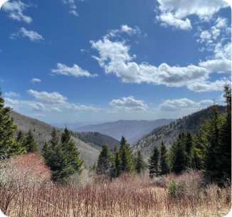
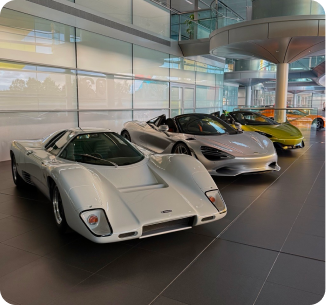
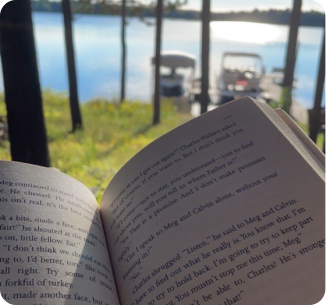
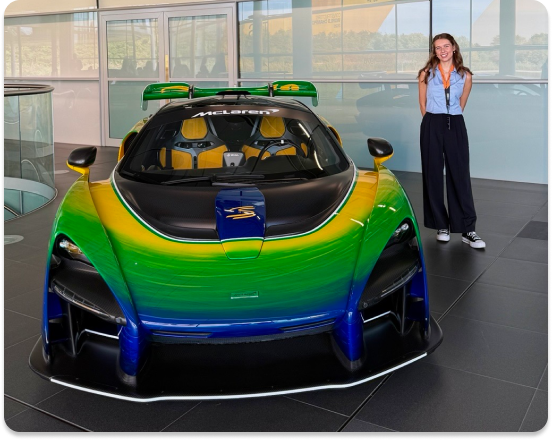

MADISON BETZ
About Me
Hi, happy you came across my website! I’m a Software Engineering student who views problem-solving as a creative process. I’m most in my element working with backend logic, real-time data, and systems where code connects to real-world motion. I’m always excited to learn, take on new challenges, and turn technical puzzles into clean, practical solutions.
Interests and hobbies
Outside of my school and work, I’m pretty much always making, exploring, or learning something new. Huge fan of Disney magic, cool cars, and getting outdoors for a nice hike or swim. When I’m staying in, you’ll usually find me in the middle of a DIY craft—whether that’s crocheting, painting, trying out a new recipe in the kitchen, or just curling up with a good book.



McLaren Racing NEXT Graduate
Selected for the McLaren Racing NEXT program, a week-long immersion into motorsport innovation and cross-industry tech. Joined 24 women in STEM for leadership workshops, site visits to industry partners, and firsthand insight into F1 engineering.
See LinkedIn Post
Pixel Park
In progress project! Bridges in-game Minecraft ride telemetry with physical microcontrollers and a central visualizer dashboard. Powered by AI predictive maintenance models, it tracks live system metrics to detect operational anomalies before breakdowns occur.
Go to Projects